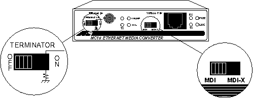
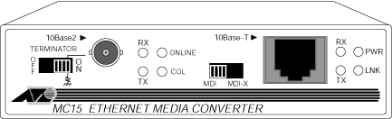

Operating Documentation
Direction 5114043-800, Rev# 9
LightSpeed 3.X Service Methods (Advanced)
Operating Documentation |
Termination switch is set to OFF and BNC “Tee” adapter with 50 ohm termination plug attached to 10 Base 2 connector.
MDI switch set to MDI position
Illustration 1: GE Specific AT-MC15 Switch Settings

Status LEDs are located on the front panel next to each port. See Illustration 2. Each LED is described in the table below ( Table 1).
Illustration 2: AT-MC15 (Allied Telesyn)

Table 1: AT-MC15 LEDs
| LED | DESCRIPTION |
|---|---|
| PWR | Indicates power is applied |
| LNK | Indicates link is established |
| TX (right) | Indicates data is being transmitted |
| RX (right) | Indicates valid data is being received |
| TX (left) | Indicates data is being transmitted on the BNC port |
| RX (left) | Indicates valid data is being received on the BNC port |
| ONLINE | Indicates the BNC port is connected to an active 10Base-2 segment |
| COL | Indicates the BNC port is sensing a collision signal |